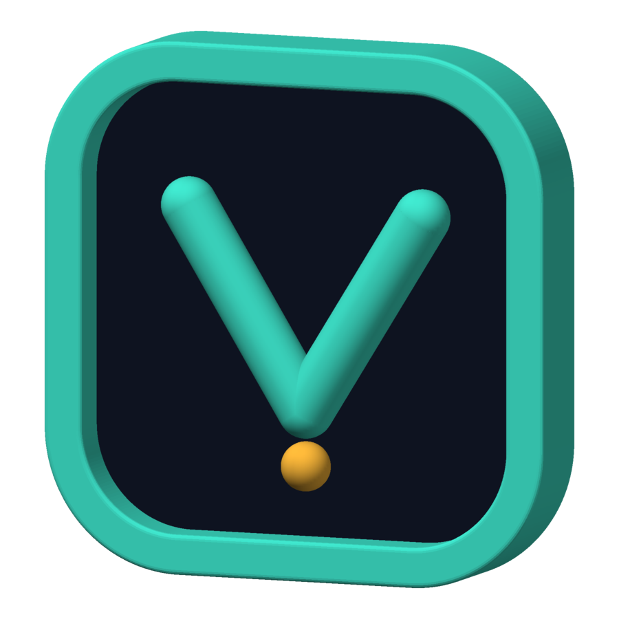

For regulated and sovereign teams
Prove what your agents ran — and where the data went.
Run your AI agents inside one sealed machine. Hand an auditor a signed receipt of exactly what ran.
- boot_profilefull-chain
- secure_bootenabled
- sb_key_provenancedev-only
- pcr03b1f…a9c2
- pcr7c04e…71d8
- verity_roothash7cf7788ddd05…c135c
- egress_allowlistapi.anthropic.com, erp.internal
- journal_digeste5a2…0b36
$ volent attest --verify policy.json # run off-node
VERIFIED
kill -9, nothing ran twice.Measured on decade-old hardware: a 2013 Intel i7-4770 under KVM. Image built from tag phase-7, roothash 7cf7788d…
Step 1 of 4
Describe your agents in one simple file.
One simple file lists each agent, the AI model it uses, its tools, and the places it may connect. Nothing else is needed.
How it works, in detailThe manifest, its schema and the tool sandbox
Each agent is one *.agent.yaml manifest, checked against a published JSON Schema. Unknown fields are errors: nothing is silently ignored, and rejected manifests return a pointer to the line and field.
- Tools are WebAssembly components in any language, referenced by content hash and signature-checked. Each declares memory, fuel and time limits.
- Capability tokens. A tool can only use a capability the manifest names, and each capability must map to an entry on the egress allowlist.
- Human approval can be required for named tools. A pending approval survives a reboot.
- The control API is HTTP/JSON with RFC 7807 errors and a generated OpenAPI 3.1 document. The implementation language never appears in a response.
apiVersion: volent/v1 kind: Agent metadata: name: invoice-triage spec: model: provider: anthropic budget: { max_concurrent: 4 } tools: - name: fetch_invoice kind: http capability: erp-read # must map to an # egress allowlist entry - name: parse_pdf kind: wasm component: sha256:ab12… approval: required_for: [tool:erp-write]
Step 2 of 4
It starts sealed.
It refuses to start if anything was changed. While it runs, nothing inside can be edited.
How it works, in detailBoot chain, verified root, updates
- Secure Boot chain. UEFI Secure Boot loads shim, then GRUB, then a signed kernel with modules off. Each link verifies the next.
- Measured boot. Each stage is recorded into the TPM's PCRs, so the attestation can prove what actually booted.
- Sealed system files. The root is a read-only squashfs under dm-verity, with a roothash the kernel checks before running anything. A changed slot does not boot. Only
/datais writable, and it is mountednoexec. - No shell. There is no shell, package manager or SSH in the production root. PID 1 is a small C program we wrote.
- A/B updates. Signed bundles are checked before a byte is written, then staged to the inactive slot. Three failed boots in ninety seconds revert automatically.
Read before relying on it. v0.1.0 ships development Secure Boot keys; production key custody is v0.2. The shim chain has never booted on stock Microsoft-CA firmware.
Step 3 of 4
Every outbound call passes one checkpoint.
Every call to the outside world goes through one gate. Anything not on your list is stopped and logged.
- 1,500 model calls in flight at once on 2 vCPU against a mock model server. 0 refused, 0 duplicates.
- 1,000 of 1,000 sandboxed runs finished in the sandbox storm. 0 crashed.
How it works, in detailAllowlist, SSRF rules, the bytecode audit, the sandbox
- Deny by default. The allowlist comes from the manifests. A request needs a capability token and a matching entry, or it is denied and the denial is journaled.
- SSRF hardening and DNS pinning. Internal and link-local addresses are refused, the resolved address is pinned, and every redirect is re-judged from the top.
- Audited, not assumed. A build-time audit reads the compiled bytecode. Naming a socket API anywhere outside the gate fails the build.
- Untrusted code runs only in WebAssembly. Each call gets a fresh wasmtime store with a memory cap, an instruction-fuel budget and a wall-clock monitor. The whole capability surface is one WIT file: no filesystem, no sockets, no fine-grained clocks.
Step 4 of 4
You get a receipt you can hand to an auditor.
The machine signs a report of exactly what started. Someone else checks it, away from the machine.
How it works, in detailWhat is signed, and how it is verified
- The report carries the boot profile (full-chain, shim-chain or verity-only), Secure Boot state and key provenance, the TPM PCR values, the verity roothash, the egress allowlist and a digest of the journal.
- It is signed on the node and verified off the node:
volent attest --verify policy.jsoncompares it with a policy you wrote. - Key provenance is always reported. Any release-shaped build fails closed while it reads
dev-only.
Reading the receipt
- boot_profile says which security chain the machine started with.
- verity_roothash is a fingerprint of every file in the system. If one byte changes, it changes.
- egress_allowlist lists the only places the agents were allowed to call.
- journal_digest is a fingerprint of the record of what the agents did.
- VERIFIED means a separate program, off the machine, checked all of it against your policy.
And if it crashes
If the power dies, it picks up where it left off.
If power is cut in the middle of a task, it resumes. It never repeats a step that already happened.
- 0 duplicated side effects, 0 lost steps across five kill -9 points.
- 400 of 400 steps completed with 100 agents running 3 steps each.
How it works, in detailThe journal and idempotency keys
- Every side effect is written to an on-disk journal before it happens, under an idempotency key of
{agent, step}. - After a restart the runtime replays the journal. A step whose key is already recorded is skipped, never repeated.
- Tested by killing the VM with
kill -9at five points: 100 agents, 3 steps each, 400 of 400 completed, 0 duplicated, 0 lost. - There is no database in the image. Durability is the journal on
/data.
Measured, not asserted
Every number here came out of a test.
Each number below was measured on real hardware, three times. We report the middle result, not the best one.
Each phase of the build ends with a gate that must pass before the work is tagged. More than 10% run-to-run variance counts as a failure, because an unstable measurement is an untrusted one. Figures are valid on hardware-accelerated KVM only.
| What | Measured | Bar | Where |
|---|---|---|---|
| Boot to first heartbeat (spread 3.0%) | 3.486 s | < 5 s | KVM host, cold page cache |
| Root payload | 53 MB | 50–100 MB | squashfs + dm-verity |
| 10,000 idle agents, total runtime memory | 40.5 MB | < 600 MB | 4 GB guest, 2 vCPU; about 4 KB each |
| Control API p99 at 10,000 agents | 50 µs | < 100 ms | median of 3 runs |
| Concurrent in-flight model calls | 1,500 | ≥ 1,500 | 2 vCPU, against a mock model server; 0 refused, 0 duplicates |
| Side effects duplicated after kill -9 | 0 | 0 | five chaos points, 100 agents × 3 steps |
| Completed steps lost after kill -9 | 0 | 0 | 400/400 completed at every point; 0 lost |
| Sandbox storm, WebAssembly invocations | 1,000/1,000 | 0 crashed | 2 vCPU, three runs |
| WebAssembly engine NIF, two clean builds | byte-identical | 2 of 2 | clean rebuild |
| Third-party crates digest-verified | 282/282 | 100% | against the upstream lock |
Hardware. Intel i7-4770 (2013), 8 cores, under KVM; guest of 2 vCPU and 4 GB. Three runs, median reported. Image built from tag phase-7, roothash 7cf7788d… The engine NIF is the one component shown to build identically twice; reproducing the whole image from its release tag is a Phase 8 gate, not yet a claim.
How it compares
A different shape from what you can rent.
Other tools solve other problems well. This one is built so a regulated team can show what ran.
The trade is stated plainly in the last row: it boots a whole VM.
| Capability | Hosted code sandboxes | Cloud agent runtimes | Durable workflow engines | VOLENT |
|---|---|---|---|---|
| Self-hostable on any hypervisor or cloud | partial | No | Yes | Yes |
| Cryptographic attestation of what ran | No | No | No | Yes |
| Untrusted code isolation | Yes | partial | No | Yes |
| Deny-by-default egress, built in | partial | partial | No | Yes |
| Durable, journaled side effects | No | partial | Yes | Yes |
| Startup | tens of ms (snapshots / warm pools) | ms (warm) | n/a (runs in your workers) | ≈3.5 s cold boot of the whole VM |
Categories, not products; individual products vary and change. Attestation here means a signed report verified off-node. Secure Boot keys are development keys in v0.1.0. Ratings are conservative and are the authors' reading, not a benchmark.
Status
What works today, and what does not yet.
This is early software, not yet version 1.0. The table says what is done and what is still in progress.
| Capability | State | Evidence |
|---|---|---|
| Hardened image, UEFI boot under 5 s | Shipped | Phase 1–2 gates |
| Custom PID 1, sealed runtime, no shell in root | Shipped | Phase 3 gate |
| dm-verity, Secure Boot, A/B slots with auto-revert | Shipped | Phase 4 gate |
| Agent runtime, manifests, control API, journal, chaos recovery | Shipped | Phase 5 gate |
| WASM sandbox, egress gate, inference through the gate | Shipped | Phase 6 gate |
Signed attestation report (PCRs, roothash, boot profile) with off-node verification (volent attest --verify) | Shipped | Phase 7 gate |
| First-boot cloud-metadata provisioning, then sealed | Shipped | Phase 7 gate |
| Per-cloud image formats (raw, qcow2, vhd, AWS UEFI blob) and the takeover installer; three boot profiles | Shipped | Phase 7 gate |
| Fleet-enrollment POST and generated runbooks | Shipped | Phase 7 gate |
| CycloneDX SBOM at every build | In progress | Phase 8 |
| Bench freeze with a regression guard | In progress | Phase 8 |
| Full image reproducible from its release tag | In progress | Phase 8 gate |
| WebAssembly engine security update | In progress | Phase 8 |
| Confidential-VM support (host cannot read VM memory) | Roadmap | Planned for v0.2, not built |
Read before relying on it. v0.1.0 ships development Secure Boot keys; production key custody is v0.2. The shim chain has not yet booted under stock Microsoft-CA firmware, because that needs a Microsoft-signed shim, so do not assume Secure Boot works on stock cloud firmware out of the box.
Scope deliberately excluded from v0.1.0: ARM, bare metal, multi-VM clustering, a web UI, a Kubernetes operator, and local GPU inference. Multi-tenancy is one VM per tenant. Agents inside a single node share a trust domain, and that is stated rather than implied.
FAQ
Questions people ask first.
Straight answers to what compliance and security teams ask. We say so plainly when the answer is not yet.
Is my data private from whoever runs the host?
Not yet — on our roadmap. Whoever controls the host machine can see the VM's memory today. Confidential-VM support is planned for v0.2 and is not built.
What the image does give you today is control over where data goes: the checkpoint stops every call that is not on your list, and the receipt shows what ran.
Does it run in my cloud or on-prem?
Yes, as one image on your own hypervisor or in your own cloud account. Formats are raw, qcow2, vhd and an AWS UEFI blob. Runbooks exist for AWS, Azure, GCP, DigitalOcean, Oracle, Hyper-V, KVM/Proxmox and Firecracker.
Two limits. Every number on this page was measured on KVM only. And the Secure Boot chain has not yet booted on stock cloud firmware, so on a public cloud expect the weaker boot profiles first.
Which AI models can it use?
Anthropic, OpenAI, and any OpenAI-compatible endpoint you point it at. Every model call goes through the checkpoint like any other outbound call.
There is no local GPU inference in v0.1.0.
What happens if it crashes?
It picks up where it left off. Every side effect is written to a journal before it happens, so a restart skips what is already done.
We tested this by killing the VM with kill -9 at five different points: 0 duplicated side effects and 0 lost steps, with 400 of 400 steps completed.
Is it production-ready?
No. It is pre-1.0 and we are looking for design partners. v0.1.0 uses development Secure Boot keys; production key custody is planned for v0.2.
The gates behind each shipped item are public in the test report.
How is this different from a sandbox service?
You run the whole sealed VM yourself, and you get three things a hosted sandbox does not offer: a signed receipt, one checkpoint for all outbound calls, and a journal that survives a crash.
The trade is startup time. It takes about 3.5 s for a cold boot of the whole VM, where hosted sandboxes start in milliseconds.
Glossary
Plain words for the technical terms.
Short definitions of the terms used on this page. Skip it if you already know them.
- Attestation
- A signed report of what a machine started with, checked by a separate program away from the machine.
- Allowlist
- The list of places an agent is allowed to connect to. Everything else is blocked.
- Egress
- Traffic leaving the machine for the outside world.
- Journal
- A written record of each action, saved before the action happens, so work can resume after a crash without repeating anything.
- Sealed image
- The whole operating system as one read-only file that is checked on every start. Nothing inside it can be edited while it runs.
- Secure Boot
- A firmware feature that only starts software signed with a trusted key.
- TPM
- A small chip, real or virtual, that records fingerprints of what started so the record cannot be rewritten later.
- Manifest
- The file that describes an agent: its model, its tools and where it may connect.
- WebAssembly sandbox
- A locked box for running code you do not fully trust. It can only do what the box was given permission to do.
- Hypervisor
- Software that runs virtual machines on a physical computer, such as KVM, Hyper-V or VMware.

Design partners
Help decide what “proof” has to mean.
We want a few teams who answer to an auditor or a regulator. Use it on your own hardware and tell us where it breaks.
Who it is for
- Regulated and sovereign teams running AI agents on data that must not leave
- Teams who need to show an auditor what ran, not describe it
- Operators on their own hypervisor, their own cloud account, or private interconnect and edge hosting partners
What partners get
- Images in the formats your platform imports, with generated runbooks
- A direct line to the people building it
- A say in what the attestation report must carry
What we ask
- Run it on your own hardware, and tell us where it breaks
- Review the attestation report against your real audit questions
- Accept that this is pre-1.0 and development-key only